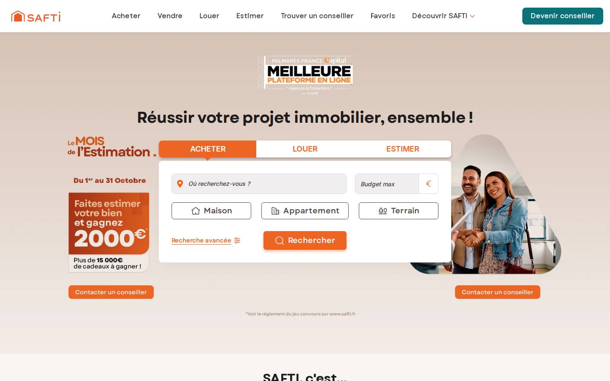
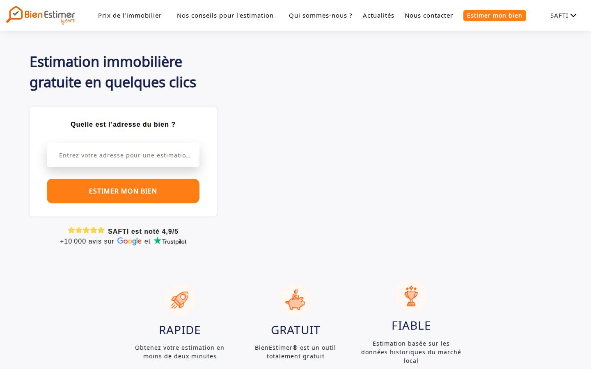
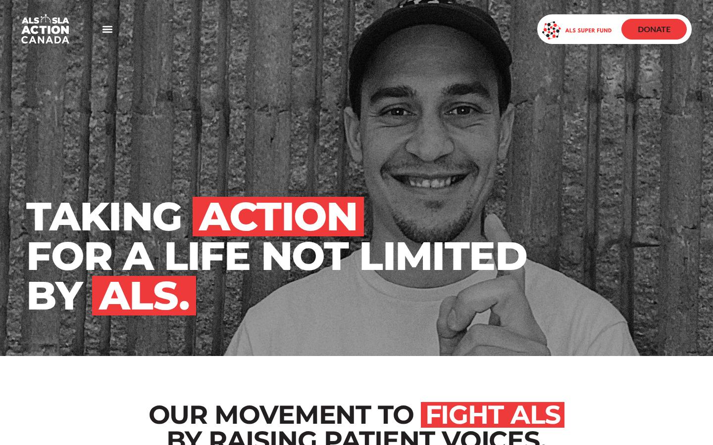
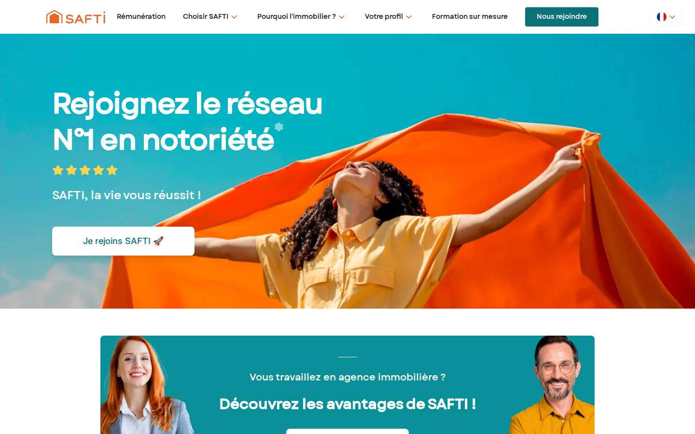

Des interfaces rapides, lisibles et faites pour durer.
Je conçois et développe des applications React et des sites Next.js ou Astro, avec une exigence : la performance et le référencement se règlent dans l'architecture, pas après la mise en ligne.1
- Rôle
- Développeur frontend senior
- Depuis
- 2012
- Stack
- React, TypeScript, Next.js, Astro
- Disponibilité
- à confirmer
Index des travaux, de 2022 à 2024
| N° | Projet | Rôle | Année | Stack |
|---|---|---|---|---|
| 01 | SAFTI.fr  | Refonte d'architecture, SEO | 2022-2024 | Next.js, TypeScript, Jest |
| 02 | Omega | Lead frontend, outil métier | 2024 | React, TypeScript, Storybook, Leaflet |
| 03 | Draw me a Sheep | Développement complet | 2024 | Astro, Sanity, WebGL, GSAP |
| 04 | Bien Estimer  | SEO, plan de marquage GA4 | 2023-2024 | Next.js, GA4 |
| 05 | ALS Action Canada  | Refonte de templates | 2024 | React, Gatsby, WordPress headless |
| 06 | Join SAFTI  | Full-stack, multilingue | 2023 | Sulu CMS, PHP, Twig |
SAFTI.fr : refondre un site d'annonces sans perdre son trafic
Problème
Un site d'annonces immobilières dont le trafic dépend du référencement naturel, à faire évoluer vers une architecture plus moderne.
Contraintes
Équipe agile, mise en production continue, pages à fort enjeu SEO.
à compléter
Décisions
- Migration progressive de Next.js vers l'App Router.
- Optimisation technique du SEO et suivi des performances.
- Tests unitaires avec objectifs de couverture.
Résultats
Une fonctionnalité proposée et développée a accompagné le passage de la note Trustpilot de 2,1 à 4,8.
à sourcer
Ce que je sais faire, et où le vérifier
- Performance web
- Temps de réponse serveur, rendu, poids des pages, suivi en production. Comment réduire le TTFB
- SEO technique
- Rendu serveur, données structurées, maillage, migrations sans perte. Le rôle des développeurs dans le SEO
- Architecture React et TypeScript
- Applications métier testées, typées, documentées dans Storybook. Arrêter d'utiliser des barrel files
- Next.js et Astro
- App Router, cache, îlots, contenus headless (Sanity, WordPress). Cache handler personnalisé pour Next.js 16
- Interaction et WebGL
- Animations et scènes WebGL au service d'un site éditorial. Projet Draw me a Sheep
Quatorze ans de frontend, d'abord en agence, maintenant en produit

Développeur depuis 2012, j'ai commencé en agence sur PHP et WordPress avant de me spécialiser dans l'écosystème JavaScript. Je travaille aujourd'hui sur des sites à fort trafic et des outils métier, en alliant performance, SEO et expérience utilisateur.
J'écris aussi : 69 articles sur React, TypeScript et la performance web.
"Chaque projet m'a permis d'apprécier sa réactivité, son engagement professionnel et ses compétences."
"Toujours au fait des nouvelles techniques d'intégration, je le conseille à 100 %."
Articles récents
Un projet, une refonte, un audit de performance ?
johan@developpeur-web.techLinkedIn à fournir GitHub à fournir